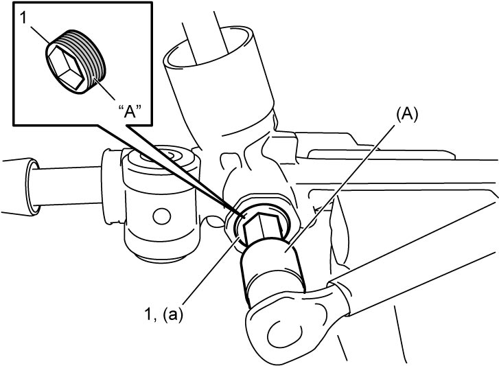
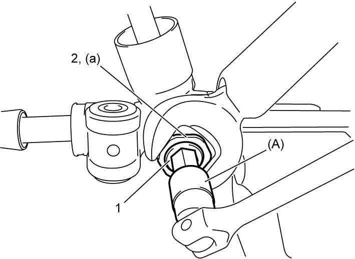

6B
| Pinion Shaft Rotation Torque Adjustment |
1)Remove steering gear case assembly. 
2)Remove rack boots.
3)Set steering rack position in center of steering rack stroke.
4)Loosen rack damper screw lock nut.
5)Loosen rack damper screw using special tool.
6)Apply sealant “A” to rack damper screw (1) and tighten rack damper screw using special tool as follows.
a)Tighten rack damper screw to 25 N·m (2.5 kgf-m, 18.5 lbf-ft).
b)Loosen rack damper screw until 0 N·m (0 kgf-m, 0 lbf-ft).
c)Tighten rack damper screw to 8 N·m (0.82 kgf-m, 6.0 lbf-ft).
d)Turn rack damper screw to back 9°.

Tightening torque
Rack damper screw* (a): Tighten 25 N·m (2.5 kgf-m, 18.5 lbf-ft) → 0 N·m (0 kgf-m, 0 lbf-ft) → 8 N·m (0.82 kgf-m, 6.0 lbf-ft) → –9°
 "Expand image")
e)Check pinion shaft rotation torque and adjust it if necessary tightening or loosening rack damper screw.
7)Hold rack damper screw (1) in that position with special tool and tighten rack damper screw lock nut (2) to specified torque.

 "Expand image")
8)Recheck pinion shaft rotation torque is as specified.
9)Install rack boots.
10)Install steering gear case assembly.